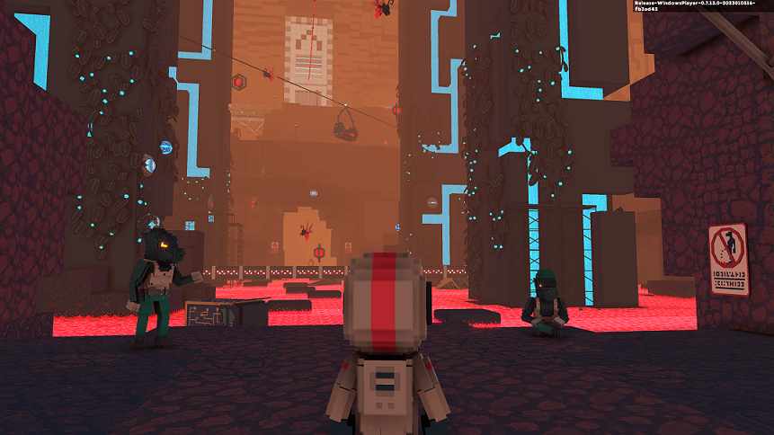
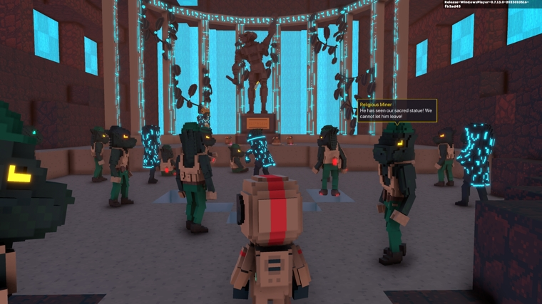
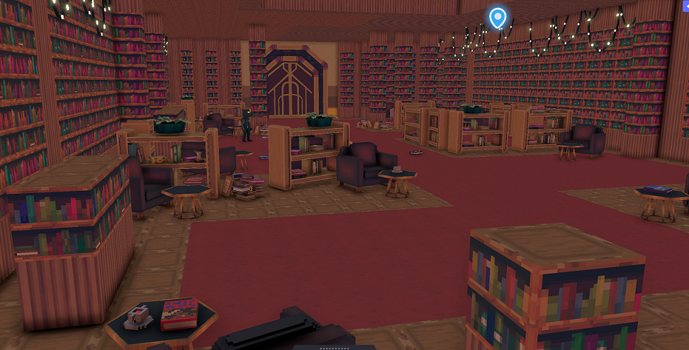
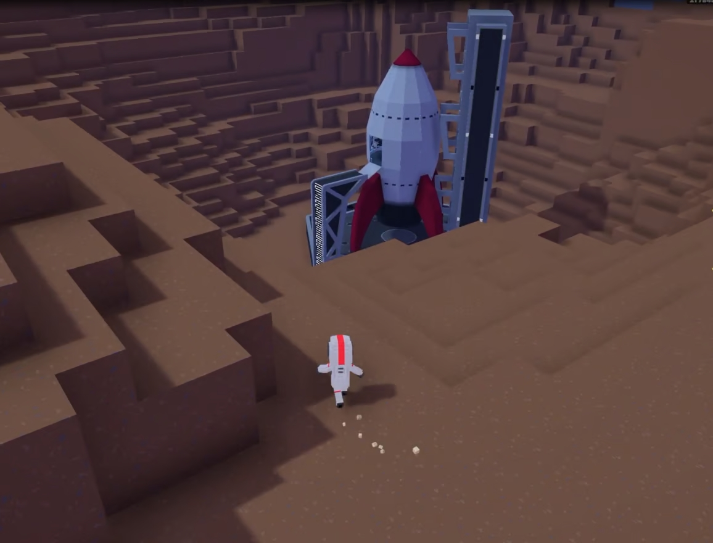

Gra osadzona na platformie The Sandbox, w której odkrywasz marsjańskie spiski, spotykasz przywódców tajemniczych kultów, demaskujesz impostorów i wcielasz się w rolę prawdziwego bohatera.
Traverse to najbardziej dynamiczna i wciągająca gra fabularna dostępna w The Sandbox. Ta fabularna platformówka przygodowa opowiada o podróży dzielnego odkrywcy Astro, którego statek kosmiczny rozbija się na Marsie. Tam bohater napotyka złowrogą społeczność gadzich istot, na czele której stoi nikczemny Melon X.
Podczas pracy nad tym projektem zajmowałem się mechaniką gry, takimi elementami jak obiekty, z którymi gracz może wchodzić w interakcję, drzwi czy urządzenia. Stworzyłem mechanikę łamigłówek dla zadań, walk z bossami oraz samą linię fabularną wraz z dialogami. Współpracowałem również z grafikami, pomagając w implementacji modeli do gry




Projektowania i implementacji mechanik gameplayowych oraz systemów interakcji w The Sandbox Game Editor, tworzenia questów, zagadek i elementów fabularnych w środowisku opartym na voxelowym pipeline, integracji modeli i assetów oraz pracy zespołowej przy dużym projekcie narracyjnym obejmującym level design i implementację rozgrywki.